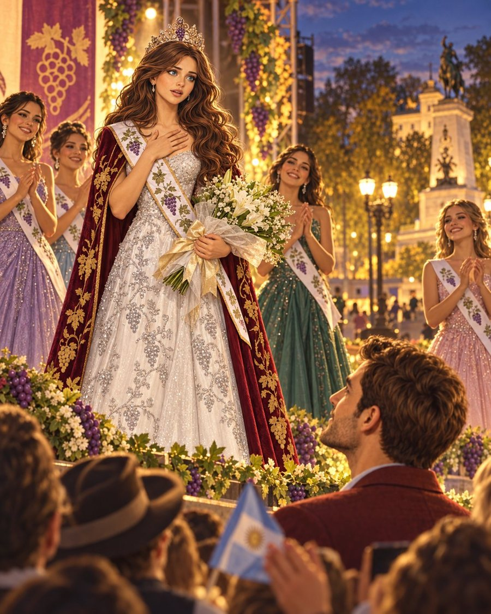
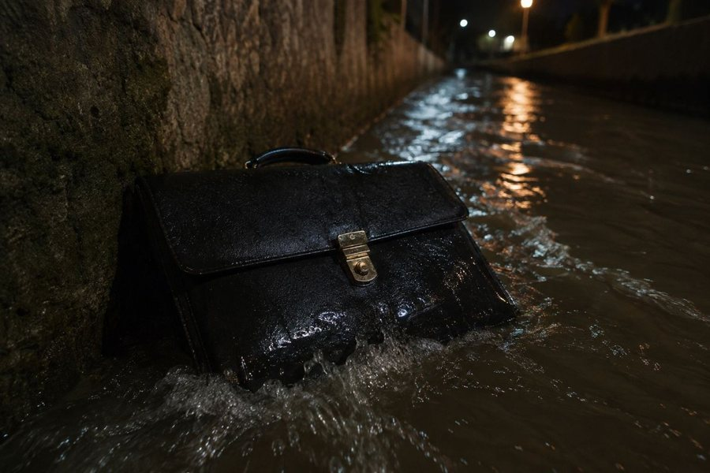

Un maletín, una acequia y un zorro
Luis se hace rico de golpe y no dice cómo. Lleva a Natalia de Moscú a Mendoza, y esa misma noche ella sale coronada reina de la Vendimia. Un maletín con hidromiel cae a una acequia del Parque San Martín, viaja por Godoy Cruz hasta la finca de Sergio, un zorro lo abre y las uvas empiezan a brillar.
La música sigue el viaje en el orden de la novela: el invierno ruso, el atardecer en la finca, las pesadillas de Karl y la noche en que Mendoza se convierte en capital. Elegí una pieza y debajo aparece lo que pasa en ese capítulo.
Banda sonora
Postales de la novela

